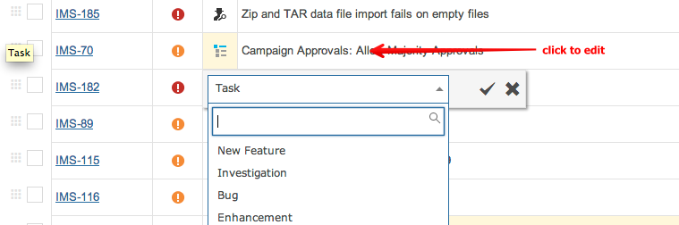
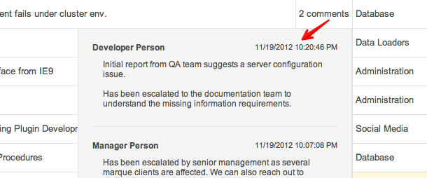
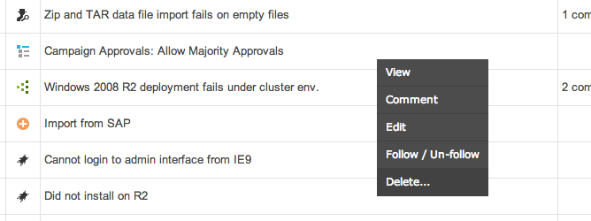

Items on the grid can be edited, deleted, commented upon and other actions.
When viewing items on the grid you can left-click to edit that field as well as other fields.

You can view all comments on any item by showing the Comments column and then clicking on the comments.

Right-click on any item to access it's context menu.

Open the item view in a new browser tab/window.
Add a comment to the item.
Displays pop-out editor so you can change item fields.
Subscribe for email notifications when the item changes.
Permanently delete the item.